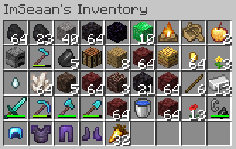
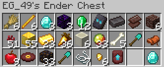

Restaurar un inventario de un jugador:
Un jugador a muerto por un bug u otro jugador lo a matado de forma injusta para luego quemar sus items, para eso tenemos al plugin Inventory Rollback
Para acceder a todos los comandos de este pluign usamos /inventoryrollbackplus:
Sintaxis de comandos:
/ir restore:
Esto abre una interfaz de todos los jugadores del servidor de los cuales se tiene guardado su inventario.
/ir restore [NOMBRE]:
Esto abre una interfaz de un jugador donde se mostrarán los inventarios guardados de sus muertes, veces que se a unido al servidor, veces que a salido del servidor y veces que se a forzado un guardado del servidor.Al darle clic en los inventarios de la muerte del jugador se abre una interfaz donde vemos varios cofres, al pasar el cursor por encima podemos visualizar que día, coordenadas y la razón de muerte.

Para acceder al inventario deseado, hacemos clic sobre el cofre y podemos ver el inventario del jugador, así como unos botones adicionales que nos ayudarán a restaurar el inventario, lo más relevantes son:
Ender Pearl:
Nos teletransportaremos al lugar de la muerte del jugador.Ender Chest:
Visualizar el cofre de ender del jugador en ese momento exacto.Botella de XP:
Restarurar los niveles que tenía el jugador.

Abrir el inventario de un jugador:
Si un jugador tiene un item importante en su cofre de ender pero no está online, con este plugin podremos revisar sus inventarios en tiempo real y editarlos
Para acceder a todos los comandos de este pluign usamos /openinv:
Sintaxis de comandos:
/openinv [NOMBRE]:
Abrir el inventario de un jugador en tiempo real.
/openender [NOMBRE]:
Abrir el enderchest de un jugador en tiempo real.